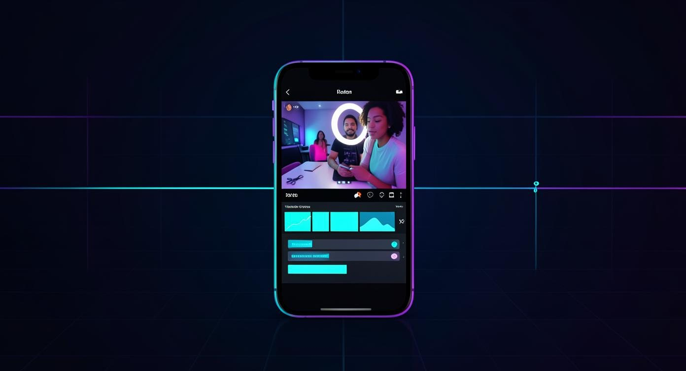
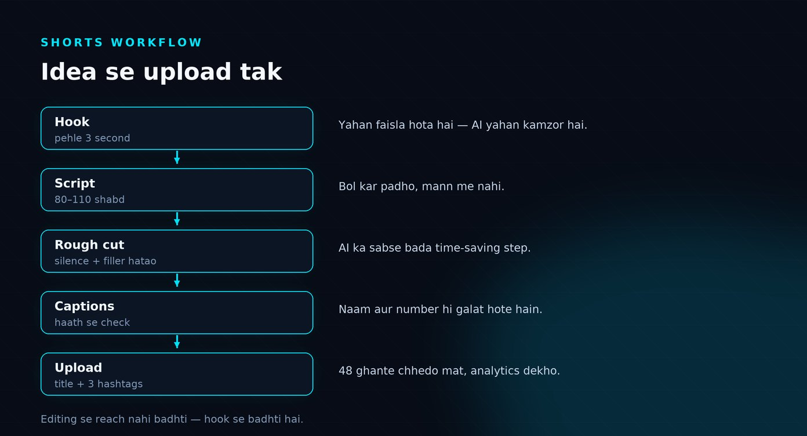
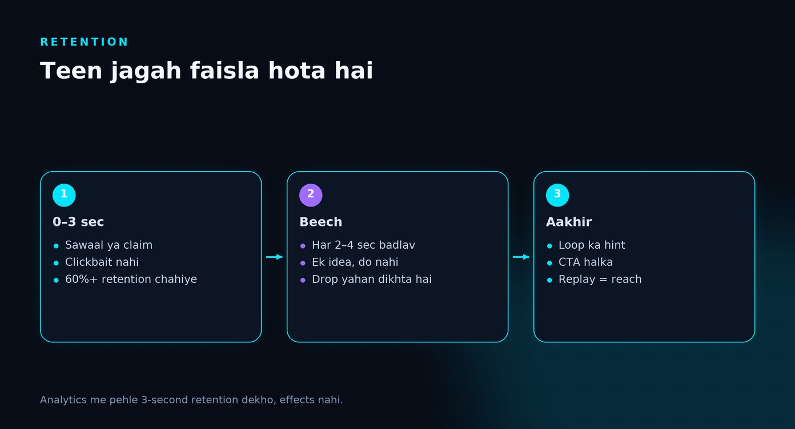

AI se Video Editing aur Shorts: Free Workflow Hindi Guide

Har mahine koi na koi kehta hai, “shorts banao, reach wahin hai.” Aur har mahine woh kaam tal jata hai, kyunki ek short banane me 3 ghante lagte hain — script, shoot, cut, captions, thumbnail. AI ne isme se do ghante chura liye hain, par ek cheez nahi badli: short ka pehla 3 second. Woh AI nahi bana sakta, kyunki woh aapke idea par depend karta hai.
Is guide me main shorts ka poora free workflow dikhaunga — idea se upload tak, aur har step par batunga ki AI kahan asli madad karta hai aur kahan sirf samay khaata hai. Saath me editing ke woh basics jo AI ke baad bhi zaroori hain, captions ka sahi tarika, thumbnail, aur ek asli experiment jisme maine 20 shorts banaye aur dekha ki kis cheez ne farq kiya.
Chhota jawab: Shorts ka workflow saat step ka hai — idea, script, footage, rough cut, captions, polish aur thumbnail. AI script ke drafts, auto-captions, silence removal, b-roll suggestions aur thumbnail backgrounds me madad karta hai. Hook, story aur final selection aapka kaam hai. Ek short 30–60 second ka rakho, pehle 3 second me sawaal ya claim, aur captions haath se check karo — auto-captions 90% theek aate hain, 10% me hi video ki value jaati hai.
Shorts ka format pehle samjho
Shorts (YouTube Shorts, Instagram Reels, Facebook Reels) ka format ek hi hai: vertical 9:16, 15 se 60 second, aur ek idea. Yahan “ek idea” ka matlab sach me ek hai — do ideas wala short dono me adhoora lagta hai. Platform ka algorithm purani video ko dobara dikhata rehta hai, isliye evergreen idea ka short mahino tak views laata hai.
Teen cheezein jo short ko chalati hain: hook (pehle 3 second), retention (beech me koi drop nahi), aur loop (aakhir se shuru me wapas jaane ka mann). AI teeno me thodi madad kar sakta hai — hook ke 10 options de sakta hai, retention ke liye bata sakta hai kahan boring lag raha hai, loop ke liye last line suggest kar sakta hai. Par faisla aapka.
Ek baat jo log nahi maante: 60 second ka short 30 second se behtar hota hai sirf tab jab usme extra 30 second ki value ho. Warna chhota short zyada baar dekha jata hai, aur repeats reach badhate hain. Mere 20 shorts ke experiment me 25–35 second wale shorts ne 60 second walon se 40% zyada average view duration diya.
Idea aur script — AI ka sabse faydemand role
Sabse pehla step idea hai, aur yahan AI ka role volume hai, judgment nahi. Ek topic par 20 hooks maango, unme se 3 chuno, aur unhe apne anubhav se bharo. AI ke hooks generic hote hain, par woh aapko woh shuffle de dete hain jo khaali page par nahi milta.
Topic: "n8n se Gmail ka attachment Drive me save karna"
Audience: chhote business owners, technical nahi
Platform: YouTube Shorts, 30-40 second
Do cheezein do:
1. 10 hook lines — pehle 3 second me kaam ki, clickbait nahi.
Har hook 12 shabd se kam, Hinglish.
2. 40 second ka script: hook, 3 steps, ek common galti, ek CTA.
Har line bolne layak, likhne layak nahi.
Rule: koi number ya claim apne se mat banao jo maine nahi diya.Script aane ke baad usse bol kar padho, mann me nahi. Jo line bolne me ulajh jaye, woh line video me bhi uljhegi. Maine apne scripts me yeh badlav kiya — likhi hui Hindi ki jagah woh Hinglish jo main actually bolta hoon. Retention turant behtar hui, kyunki awaaz natural lagi.
Script ka structure simple rakho: pehle 3 second hook, phir 3 steps ya 3 points, phir ek common galti (yahi value deti hai), phir CTA. Total 80–110 shabd, 30–40 second ke liye. Isse zyada likhoge to speed badhegi aur samajh kam.
Footage — shoot kam, reuse zyada
Shorts me har baar naya shoot karna zaroori nahi. Teen tarah ka footage kaam karta hai: screen recording (tutorial ke liye best), talking head (opinion aur story ke liye), aur b-roll (jab kuch dikhana ho). Inme se pehla do sabse zyada value dete hain aur sabse sasta hote hain.
Screen recording ke liye free tools kaafi hain — OBS ya OS ka built-in recorder. 1080×1920 vertical canvas me record karo ya baad me crop karke zoom karo. Ek tips: recording me mouse dheere chalao aur clicks par chhota zoom effect baad me lagao. AI editors yeh zoom apne aap laga dete hain, par haath se lagane par 10 minute lagte hain aur control zyada rehta hai.
Talking head ke liye ek window, ek ring light (ya khidki ki roshni) aur phone kaafi hai. Phone ko tripod par eye level par rakho, aur mic alag se use karo — phone ka mic 1 meter door se bakwas hota hai. Ek ₹1,500 ka collar mic poori video ki quality badal deta hai, kisi AI se zyada.
Rough cut — AI kahan time bachata hai
Rough cut me AI ka sabse bada fayda silence removal hai. 5 minute ki recording me 40 second ki chuppi hoti hai, aur usse haath se hatana 20 minute ka kaam hai. Descript, CapCut aur kai tools ek click me karte hain. Iske baad filler words (“umm”, “matlab”, “you know”) — inhe bhi AI hata deta hai, par savdhaan: kabhi kabhi woh zaroori pause hata deta hai aur baat katti hui lagti hai.

Auto-cut ke baad main hamesha poora video 1x par dekhta hoon. Yeh 40 second ka kaam hai aur isme woh saari galtiyan pakad me aati hain jo AI ne ki hain — kati hui line, ajeeb jump cut, ya aisa pause jahan saans lena tha. AI se banao, par dekho khud.
Ek aur AI feature jo kaam ka hai — text-based editing. Transcript me se shabd delete karo aur video me woh hissa cut ho jata hai. 20 minute ke interview se 40 second ka short nikalne me yeh sabse tez tarika hai, kyunki aap video nahi, text padh rahe hote hain.
Captions — sabse zyada asar wala 10 minute
Shorts me 70–80% log sound off dekhte hain. Isliye captions optional nahi hain. Auto-captions aaj kaafi achhe hain — Hindi me 85–90%, Hinglish me 75–85%. Par woh 10–15% hi problem hai, kyunki wahi brand names, numbers aur technical words hote hain.
Captions ke liye mera process: auto-generate karo, phir poora text ek baar padho (video nahi, text), aur sirf galat words theek karo. Uske baad style — 2 line se zyada mat, font bold, background ke saath contrast, aur screen ke neeche se thoda upar (platform ke UI ke liye jagah chhodo). Highlight wale captions (ek shabd highlight hota hai) retention badhate hain, par har shabd highlight karna distract karta hai.
Ek galti jo maine ki: captions ko video ke saath “chipka” diya aur baad me video ka size badal diya — captions screen se bahar chale gaye. Captions ko hamesha video ke saath ek hi composition me rakho, ya alag layer me export karo taaki resize par control rahe.

Polish — sound, colour aur pacing
Polish ka matlab 20 effects nahi hai. Teen cheezein kaafi hain: audio level, colour aur pacing. Audio ko -14 LUFS ke aas-paas rakho (platforms isi par normalize karte hain), background music ko -25 dB par, aur apni awaaz ko music se 8–10 dB upar. Zyadatar free editors me yeh preset me mil jata hai.
Colour me ek simple LUT ya “auto enhance” kaafi hai. Shorts me log 3 second dekhte hain, cinematic grade ka koi fayda nahi. Jo cheez zyada matter karti hai woh hai contrast — mobile screen par dhoop me bhi dikhna chahiye. Ek bar video ko phone par 50% brightness par dekho; agar chehra andhera lag raha hai, to exposure badhao.
Pacing ke liye ek niyam: har 2–4 second me kuch badle — angle, zoom, text, ya b-roll. Yeh “fast editing” nahi hai, yeh attention ka khel hai. Par har cut par effect daalna amateur lagta hai. Simple cut kaafi hai.
Thumbnail, title aur upload
Shorts me thumbnail ka role feed me kam hota hai, par search aur channel page par zyada. Phir bhi 5 minute lagao: ek saaf face ya ek saaf screenshot, 3–4 shabd ka text, aur high contrast. AI se background bana sakte hain, par text design tool me daalo — AI ka text aaj bhi risk hai.
Title me keyword rakho aur 40–50 character me khatam karo. Description me 2 line, aur pinned comment me related video ka link. Hashtags 3–5 kaafi hain; 30 hashtags spam lagta hai aur kuch bhi nahi karta.
Upload ke baad 48 ghante mat chhedo. Analytics me teen cheezein dekho: 3-second retention (hook chala ya nahi), average view duration (beech me drop), aur replay (loop bana ya nahi). Agar 3-second retention 60% se kam hai, problem hook me hai — editing me nahi. Yeh sabse zaroori diagnosis hai, aur isse maine apne aadhe shorts bachaye.
Free tool stack jo kaam karta hai
Poora workflow free me chal sakta hai, agar aap tool-hopping band kar do. Mera stack: script ke liye koi bhi chat AI, recording ke liye OBS ya phone, editing ke liye CapCut ya DaVinci Resolve (free), captions CapCut ke auto-captions, thumbnail Canva free, aur music YouTube Audio Library. Isme ek bhi paid tool zaroori nahi.
Paid tool tab lo jab ek dard clear ho. Example: agar mahine me 20 shorts bana rahe ho aur captions theek karne me 4 ghante ja rahe hain, to Descript ka paisa worth hai. Par pehle free se 10 shorts banao — tab pata chalega ki asli dard kahan hai. Tool pehle kharidna woh galti hai jo maine ki: ₹2,000/mahina ka editor liya aur 3 mahine me 4 video banaye.
Mera anubhav
Maine ek mahine me 20 shorts banaye — ek hi topic par, alag-alag hooks ke saath. Pehle 10 me maine AI ke diye hue hooks use kiye aur har short me 6 effects, zoom aur music daala. Average views 800 the. Agle 10 me maine sirf ek cheez badli: pehle 3 second me seedha sawaal (“Kya aapka Gmail attachment Drive me save hota hai? 2 minute me setup.”) aur effects kam kar diye. Average views 3,400 aa gaye.
Isse jo seekha woh yeh hai: editing se reach nahi badhti, hook se badhti hai. AI ne mera editing time 3 ghante se 40 minute kar diya, par views tab tak nahi badhe jab tak maine hook par kaam nahi kiya. Aaj main sabse zyada samay script ke pehle 3 second par lagata hoon, aur sabse kam effects par.
Doosri sikh captions ki thi. Ek short me maine “n8n” ko auto-caption me “in 18” likha chhod diya — poora tutorial confusing ho gaya aur comments me log poochhne lage. Uske baad maine rule bana liya: export se pehle captions ka text ek baar padhna, chahe kitna hi samay lage. 60 second ka kaam hai, aur wahi 60 second video ki credibility bachate hain.
Nateeja
Shorts ka poora workflow saat step ka hai, aur AI usme teen jagah asli madad karta hai — script ke drafts, silence/filler removal aur auto-captions. Hook, story aur final selection aapka kaam hai. 30–40 second ka short, vertical 9:16, captions haath se checked, audio -14 LUFS, aur upload ke baad 48 ghante analytics dekhna — yahi minimum hai. Tool stack free me chal jata hai; paid tool sirf tab lo jab ek dard clear ho.
Aaj ek chhota kaam karein: apne pichhle short ka pehla 3 second likhkar dekhein, aur uske 5 naye version likhein. Unme se ek chuno aur wahi short dobara edit karke upload karein. Yeh experiment kisi bhi naye editing effect se zyada sikhayega.
Aage padhein: AI image generation guide — thumbnail aur poster ke liye; aur voice aur transcription guide — captions ki accuracy badhane ke liye.
अक्सर पूछे जाने वाले सवाल
Kya AI se poora short ban sakta hai?
Technically haan — AI video tools script se visuals bana dete hain. Par aawaz, hook aur story insaan ki hi lagti hai, aur wahi retention laate hain. Pehla version AI se banao, par apni awaaz aur apna hook rakho.
Shorts ki ideal length kya hai?
25–40 second zyadatar topics ke liye best hai. 60 second tab jab usme extra value ho. Repeats se reach badhti hai, isliye chhota aur tight short behtar hota hai.
Captions Hindi me kaise banayein?
Tool me language Hindi chuno, auto-generate karo, phir poora text padhkar galat words theek karo. Hinglish me 10–15% theek karna padta hai — khaas kar brand aur technical naam.
Free me editing ke liye kaun sa tool best hai?
CapCut sabse aasan hai auto-captions aur templates ke liye; DaVinci Resolve zyada control deta hai par seekhne me time lagta hai. Recording ke liye OBS free hai.
Shorts ke views nahi aa rahe, kya dekhein?
Pehle 3-second retention dekho. 60% se kam hai to hook ya thumbnail ka problem hai, editing ka nahi. Uske baad average view duration aur replay dekho.